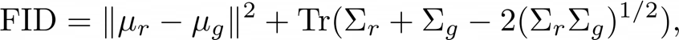
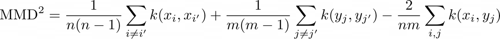

The Uncanny Valley: A Challenge Beyond AI's Reach
We live in an era where AI excels in tasks once thought to be uniquely human—predicting trends, creating art, and even holding conversations. Yet, some domains remain elusive to AI mastery. This paper dives into one such domain: the uncanny valley effect in AI-generated images. Through a series of experiments, we investigate whether AI can perceive and evaluate the subtle sense of "uncanniness" in its own creations. Our findings reveal a striking limitation—detecting realism and detecting humanlike qualities in images is a challenge that AI, for all its sophistication, has yet to conquer.
Motivation
The uncanny valley refers to a psychological phenomenon where humans feel discomfort, eeriness, or even revulsion towards human-like entities—such as robots, avatars, or digital characters—that are almost, but not perfectly, lifelike. As AI-generated human-like images become integral to virtual environments, advertising, and entertainment, understanding and mitigating this effect is not just an academic challenge but a practical necessity.
Understanding the uncanny valley in GenAI is crucial not only for improving user experiences but also for addressing broader questions of AI-human interaction, trust, and acceptability. This work contributes to a future where generative models are not only technically advanced but also capable of seamlessly integrating into human-centric applications.
This project seeks to bridge the gap between computational metrics and human perceptual judgment by exploring the uncanny valley effect in image generation. We aim to assess the extent to which image measurement metrics reflect human experiences of "uncanniness" and whether generative models can inherently detect or even manipulate these features. By doing so, we hope to provide actionable insights for designing AI systems that produce more human-like, relatable, and effective images.
Background and Related Work
In 1970, a Japanese roboticist, Masahiro Mori, theorized that as a robot’s appearance becomes more humanlike, people’s emotional response to it becomes increasingly positive, until a point where the resemblance is close but still slightly “off.” At this point, instead of evoking empathy, the figure generates a sense of unease—this is the “valley” in the uncanny valley curve [1].
More generally, the uncanny valley refers to a psychological phenomenon where humans feel discomfort, eeriness, or even revulsion towards human-like entities—such as robots, avatars, or digital characters—that are almost, but not perfectly, lifelike. Several studies have come up aiming to identify uncanniness in genAI images to help train models. A recent study used the CLIP (Contrastive Language-Image Pre-training) neural network to explore the uncanny valley effect, finding that conflicting visual cues, especially in human faces, are associated with negative sentiment, a pattern CLIP learned from its training data [2].
However, limited research has been conducted to investigate whether AI models such as ChatGPT or Stable Diffusion possess an understanding of the uncanny valley concept during image generation. Specifically, the question arises: can Stable Diffusion effectively differentiate between images that fall into the uncanny valley and those that do not? Furthermore, if such differentiation is possible, can this insight be quantified and modeled mathematically using established metrics? This paper seeks to address these gaps by exploring these critical questions.
Further, no literature currently exists that establishes a correlation between image generation and any existing measures of image distributions such as Frechet Inception Distance (FID) or the Kernel Inception Distance (KID). In this paper, we extend the concept of distance to cover distribution similarity measures. Distributional similarity is a measure of how similar two probability distributions are. These measures quantify the degree to which two sets of data overlap, align, or differ. An early application of these measures was in natural language processing (NLP). In 1999, Lee's paper titled Measures of Distributional Similarity empirically evaluated seven different measures within the context of language models [3]. Many of these measures, such as the Jensen-Shannon Divergence, are still relevant today. While the focus of distribution similarity measures is statistical distributions, perceptual similarity measures aim to quantify how two similar stimuli appear to the human senses. This considers human perception biases, and they touch on the domain of the psychophysical, like sensitivity to structure, color, and textures. Research shows that, over time, perceptual similarity measures are increasingly reflective of actual human perceptions [4].
This paper uses two distance measures to evaluate how close generated AI images are to a distribution of real images. They are the following:
Frechet Inception Distance (FID)
Frechet Inception Distance (FID) is a type of distribution similarity measure typically used to evaluate the quality of generated images by comparing its statistical properties against a set of real images. This is conceptually inspired by the Frechet distance, a measure of similarity between two curves which accounts for their geometric shape and order of points. FID is given by the following equation:
FID Equation:

Where:
- μr and μg are the means of the feature distributions of the real and generated images, respectively.
- Σr and Σg are the covariance matrices of the feature distributions of the real and generated images, respectively.
Kernel Inception Distance (KID)
Kernel Inception Distance (KID) is closely related to FID, but instead of using Frechet distance, KID uses Maximum Mean Discrepancy (MMD) with a polynomial kernel to compare distributions. In the original paper where this measure was first mentioned, Sutherland et al. proposed this as an improved measure of GAN convergence [4].
Perhaps the biggest difference between the two is that FID assumes the feature distributions are multivariate Gaussian, while KID does not make any assumption about the distribution of features. Sutherland et al. also showed that KID provides an unbiased estimate, even with small datasets [4]. On the other hand, FID does not provide an unbiased estimate when calculated on finite datasets, thus leading to higher expected values.
KID Equation:
Where:
- xᵢ,xⱼ are feature embeddings of real images.
- yᵢ,yⱼ are feature embeddings of generated images.
- k is a kernel function, typically a polynomial kernel: k(x, y) = (xT·y + c)d, where c is a constant and d is the degree of the polynomial.
Apart from metrics, prior work has established the uncanny valley and shown that features like eye symmetry, skin texture, and facial proportions can lead to discomfort when distorted [7]. However, a gap exists in linking these perceptual features directly to GenAI models. Currently, there is no literature that establishes a quantitative correlation between features generated by GenAI and the uncanny valley.
This project will bridge this gap by identifying feature-specific contributions to the uncanny valley and assessing the ability of deep neural nets to detect these discomfort-inducing elements.
Hypotheses
Based on the background study and analysis, our paper proposes four key hypotheses for testing:
- H1: Generative AI models can detect uncanny valley effects.
- H2: There is a measurable correlation between human perceptions of uncanniness and metrics like FID/KID.
- H3: Different levels of uncanniness correspond to distinct features identifiable via feature extraction.
- H4: Large Language Models (LLMs), such as GPT-4, can assess the uncanniness of images.
Experiments
Corresponding to each hypothesis, we ran one experiment each to test our hypotheses.
Experiment 1: Testing Hypothesis H1
Objective: Determine if generative models like Stable Diffusion detect uncanny valley effects.
Methodology:
To evaluate whether models like Stable Diffusion can detect uncanniness in images, we initially considered manipulating the latent space of the model to generate images with varying levels of uncanniness. However, due to resource constraints and the limitations imposed by the exposed APIs provided by Stable.AI, this approach was not feasible.
We adopted a prompt-engineering strategy to guide the image generation process. Through this method, we defined five distinct levels of "uncanniness," focusing on the ambiguous transition between the uncanny valley and a natural human-like appearance. These levels are carefully positioned in the upper-right quadrant of the uncanny valley graph, reflecting our interest in the subtle and complex region where perceptions of uncanniness arise.
The five levels of uncanniness are defined as follows: :- Level 1: Represents actual human images, serving as a baseline for comparison.
- Level 2: Represents the most realistic AI-generated images, closely grounded in the characteristics of real human images.
- Level 3: Represents hyper-realistic AI-generated images, where realism is exaggerated to an almost surreal extent.
- Level 4: Represents semi-realistic AI-generated images, exhibiting visible deviations from true realism.
- Level 5: Represents AI-generated images firmly situated within the uncanny valley, characterized by features that evoke discomfort or unease in viewers.
Image Generation Process:
To generate the images required for this study, we utilized the paid version of Stable.AI. Given the focus on the uncanny valley phenomenon, all images were specifically of human subjects. The process for generating images at each level of uncanniness is outlined below.
- Level 1: We chose the following diverse open source human images from pexels.com:
- Level 2: To ensure that the images generated by Stable Diffusion were grounded in actual human likeness, we utilized the "image-to-image" functionality provided by the model. Through this approach, we input open-source human images as a reference and adjusted the hyperparameter controlling the grounding percentage to 50%. This setting directed the model to base 50% of the generated image on the input reference while allowing creative variation for the remaining portion.
We further refined the image generation process by crafting prompts such as “generate a realistic image of a man,” “generate a realistic image of a woman,” or “generate a realistic image of an Asian woman.” These prompts were designed to guide the model in producing diverse outputs that accurately reflected variations in gender, ethnicity, and other demographic attributes.
Generated images for Level 2: - Level 3: Level 3 images were generated by prompting the model to “generate a hyper-realistic image of a man,” “generate a hyper-realistic image of a woman,” or “generate a hyper-realistic image of an Asian woman.” Generated images are as follows:
- Level 4: Level 4 images were generated by prompting the model to “generate a semi-realistic image of a man,” “generate a semi-realistic image of a woman,” or “generate a semi-realistic image of an Asian woman.” Generated images are as follows: "
- Level 5: Level 5 images were generated by prompting the model to “generate an image of a man that you believe falls in the uncanny valley” ,“generate an image of a woman that you believe falls in the uncanny valley". Generated images are as follows: "


Survey Design and Distribution
A survey was developed using Qualtrics, comprising five sets of images corresponding to the five levels of uncanniness defined earlier. Participants were asked to rank the images within each set based on their perceived strangeness. The prompt provided to respondents for each set was as follows:
"Please rank the images based on how strange they feel, with 1 being the least strange and 5 the most. Each rank (1–5) must be assigned to only one image. For example, if you rank Image 1 as 3, no other image can have a rank of 3."
In addition to ranking the images, participants were asked to provide qualitative feedback by answering the following question:
"Explain in 1–2 sentences: What features or factors influenced your ranking?"
Demographic data, including age, gender, educational background, and frequency of interaction with AI-generated images, was also collected to contextualize the responses. The survey was distributed to MIT graduate students via WhatsApp and to a broader audience through social media platforms such as Instagram and LinkedIn.
Results
A total of 81 survey responses were received, of which 25 were partial and subsequently excluded from the analysis. The remaining 56 complete responses formed the dataset for this study.
Demographics:The survey respondents were predominantly aged 25-34 (54%) and 35-44 (27%), with a male majority (66%). Most participants held advanced degrees, with 59% having a Master’s and 7% a Doctorate. Interaction with AI-generated images varied, with 30% encountering them weekly, 29% interacting 2-3 times weekly, and 20% almost daily, while only 13% reported rare interaction. This diverse sample offers valuable insights into perceptions of AI-generated content across demographics and experience levels.
Summarization of the textual inputs:The ranking of "strangeness" was primarily based on the perceived realism of AI-generated images. Faces with excessive smoothness, artificial lighting, overly symmetrical features, or direct eye contact appeared most unnatural and strange. Strangeness was heightened by plastic-like textures, unnatural expressions, and an uncanny valley effect. Factors such as skin texture, light reflection, eye design, and facial harmony heavily influenced perceptions. Images that seemed overly curated or mimicked art were less realistic. More human-like features, imperfections, and natural settings reduced the "strange" effect. The phenomenon was rooted in deviations from expected human traits, with less emotion and realism causing discomfort.
*This textual summary was created by inputting all data from surveys into GPT-4.
Ranking Results:Each survey participant ranked 5 images on a scale of 1 to 5 with 1 being the least strange and 5 the most. The ranking given by each respondent was converted into a weighted average score using the formula:
Average Rank = [(1 x Count for Rank 1) + (2 x Count for Rank 2) + (3 x Count for Rank 3) + (4 x Count for Rank 4) + (5 x Count for Rank 5)] / Number of Respondents
The results for each of the 5 sets are shown below. In this explanation, L1_1 means "Image 1 from Level 1", L2_1 means "Image 1 from Level 2," and so on. The table shows how survey participants ranked the images, starting from the least strange (with the lowest weighted average score) to the most strange (with the highest weighted average score).For example, in Image Set 1, L1_1 (an image from Level 1) was ranked as the least strange, with an average weighted score of 1.86.:
| Image Set 1 | Image Set 2 | Image Set 3 | Image Set 4 | Image Set 5 |
|---|---|---|---|---|
| L1_1: 1.86 | L1_3: 1.5 | L2_4: 1.48 | L1_2: 1.78 | L1_5: 1.5 |
| L2_1: 2.43 | L2_2: 1.94 | L1_4: 1.80 | L2_3: 1.85 | L2_5: 1.82 |
| L4_2: 2.89 | L4_2: 3.26 | L4_4: 3.71 | L3_3: 3.25 | L4_5: 3.62 |
| L3_2: 3.46 | L3_2: 3.44 | L3_4: 3.89 | L4_3: 3.25 | L3_5: 3.66 |
| L5_2: 4.57 | L5_2: 4.83 | L5_4: 4.10 | L5_3: 4.85 | L5_5: 4.39 |
We treat human rankings as the ground truth. Then, we compared these rankings with how people rated the images generated by Stable Diffusion at each level. For each level, we calculated accuracy by counting how many images generated by Stable Diffusion at Level 1 were also rated as Level 1 by humans. We repeated this for all levels. Here are the accuracy rates we found for each level:
| Level | Alignment between Ground Truth and Stable Diffusion Predictions |
|---|---|
| Level 1 | 80% |
| Level 2 | 80% |
| Level 3 | 20% |
| Level 4 | 20% |
| Level 5 | 100% |
Stable Diffusion demonstrates an accuracy of 80-100% at the extremes of the spectrum—specifically, in generating highly realistic images grounded in human likeness and those that fall within the uncanny valley. However, its performance is much less effective (20%) when generating images that are hyper-realistic or semi-realistic, corresponding to Level 3 and Level 4.
Experiment 2: Testing Hypothesis H2
Objective: Assess correlations between FID/KID metrics and human perception.
Methodology:
To implement an FID, we utilized a pre-trained InceptionV3 model as a feature extractor. The top classification layer of the model was removed, and global average pooling was applied to produce feature vectors from images. The input shape was downsampled to 299 x 299 x 3. Each image was pre-processed, resized, and normalized. These were then passed through the InceptionV3 model to extract high-level feature embeddings representing perceptual and semantic information about the images. The FID is then computed using Equation 1.
Four FID measures were computed to correspond to each of the four sets of AI-generated images. For each set, its distance was computed from a set of real images.
To implement KID, we used the torchmetrics library. The preprocessing and extraction of features follow the same procedure as what we did when we computed for FID. However, we instead compute for the squared Maximum Mean Discrepancy (MMD) through Equation 2.
Results:
On Frechet Inception Distance (FID)The following table shows the FID scores:
| Image Set | Description | FID |
|---|---|---|
| Level 2 | AI-generated images which modify a base human image | 359.9298 |
| Level 3 | Hyper-realistic AI images | 381.9252 |
| Level 4 | Semi-realistic AI images | 373.4011 |
| Level 5 | AI images in uncanny valley | 406.5440 |
Note that the range of FID is 0 to infinity, with lower values indicating closeness to a benchmark set. From the table, we see that images 1 and 4 intuitively have the lowest and highest FID values, respectively. Image set 1 should appear the closest since these images are produced by prompting a stable diffusion model to vary a base image slightly. On the other hand, image set 4 should appear the farthest since these images were prompted to be in the hypothetical “uncanny valley.”
We glean two important insights from the extreme ends of the FID. First, there is a large perceptual and statistical gap between the set of real images and the set of AI-modified images. This suggests that the generative model might not yet be producing images that closely match the real image distribution. Although beyond the scope of this study, we also do not discount the possibility that the selected prompting strategy affects the result. Despite this limitation, this does not discount the fact that AI images modified from real images appear the closest based on FID. Another important insight is that images prompted to “appear” in the uncanny valley have the highest FID. This suggests that generative models, especially stable diffusion models, are seemingly “aware” of the uncanny valley. This indicates that the generative model is capable of capturing and amplifying subtle characteristics associated with the uncanny valley.
Lastly, a curious case is notable between image sets 2 and 3. The generative model assigns a higher FID for images prompted to be hyper-realistic than those prompted to be semi-realistic. This result initially suggests that the model struggles to replicate real-world hyper-realistic features more than semi-realistic ones, potentially because of the higher level of detail and complexity involved.
On Kernel Inception Distance (KID)The following table shows the KID scores:
| Image Set | Description | KID |
|---|---|---|
| Level 2 | AI-generated images which modify a base human image | 0.0022 |
| Level 3 | Hyper-realistic AI images | 0.0183 |
| Level 4 | Semi-realistic AI images | 0.0344 |
| Level 5 | AI images in uncanny valley | 0.0610 |
Note that the KID values are significantly smaller than their FID counterparts. This is due to the kernel function, which normalizes and bounds the distance values more tightly. Hypothetically, this makes the KID metric less sensitive to the scale of the feature embeddings extracted by InceptionV3. Despite this difference in scale, the analysis remains the same – lower values are closer to the set of real images, and higher values are farther away.
KEY TAKEAWAYS:It appears that the generative model is aware of the different levels of uncanniness, as evidenced by the results we got from measuring the FID and KID of the different sets of images. In this section, we inspect if this awareness correlates with the human perception of uncanniness.
- The inconsistency between the FID and KID results for L2 and L3 is also reflected in how humans distinguish semi-realistic and hyper-realistic images. With a human accuracy of just 20% for both levels, this coincides with the difference in distance as measured using FID and KID.
- Consistent with our FID and KID results, the ground truth closest image to actual humans (L2) and the farthest (L5) both get the highest accuracies of 80% and 100%, respectively. This means that these metrics align and correlate with how humans perceive the similarity of images from real ones. It is also notable that humans and the FID/KID measure convincingly rate L5 images in the uncanny valley. This suggests that generative models are aware of what an uncanny valley is and that the selected distance measures reflect that well.
Experiment 3: Testing Hypothesis H3
Objective: Explore if clustering techniques can identify uncanniness levels.
Methodology:
The methodology aims to evaluate whether the predefined sets align with natural groupings in the feature space, using clustering algorithms like K-Means or Hierarchical Clustering to the extracted features. If the algorithm’s clusters match the human sets, we can conclude that the features likely capture the characteristics humans used. If not, we may need to consider different features or higher-level descriptors.
Data Preparation:A mapping of image filenames to human-defined cluster labels was established to serve as the ground truth for clustering evaluation. A folder containing 25 images in various formats (e.g., .png, .jpg) was utilized.
Feature Extraction:
A pre-trained ResNet-50 model was employed as a feature extractor. The final fully connected (FC) layer was replaced with an identity function to output 2048-dimensional feature vectors. Input images were resized, cropped, normalized, and converted to tensors using a standard preprocessing pipeline from torchvision.transforms. Feature vectors were extracted for each valid image in the folder.
Extracted feature vectors were scaled using StandardScaler. Principal Component Analysis (PCA) was applied to reduce the dimensionality of the feature vectors to five components, retaining meaningful variance while simplifying clustering.
Four clustering algorithms were applied on the reduced feature space:
- K-Means: Partitioned the data into
n_clustersby minimizing intra-cluster variance. - Gaussian Mixture Model (GMM): Assumed data was generated from a mixture of Gaussian distributions and assigned soft cluster probabilities.
- Spectral Clustering: Leveraged graph-based affinity to partition data into clusters.
- Agglomerative Clustering: Hierarchically merged clusters using a bottom-up approach.
Results:
The 2D projection of reduced features (PCA components) was visualized with cluster assignments from K-Means using scatter plots, providing an intuitive understanding of clustering performance.
The clustering results were compared to the human-defined labels using:
- Adjusted Rand Index (ARI): Measured the agreement between predicted clusters and ground truth labels, adjusted for chance.
- Normalized Mutual Information (NMI): Evaluated the information shared between predicted clusters and ground truth labels.
| Clustering Method | Adjusted Rand Index (ARI) | Normalized Mutual Information (NMI) |
|---|---|---|
| K-Means | 0.1777 | 0.4428 |
| Gaussian Mixture Model | 0.1385 | 0.3982 |
| Spectral Clustering | 0.1880 | 0.5005 |
| Agglomerative Clustering | 0.1777 | 0.4428 |
All methods yield relatively low ARI values (<0.2), suggesting poor alignment with the ground truth labels. NMI values are higher (~0.4-0.5), indicating that while cluster assignments capture some mutual information with the ground truth, the clusters still lack clear correspondence to the true labels. Further, the small number of samples might contribute to the low performance. Further limitations are discussed in the limitations section.
Experiment 4: Testing Hypothesis H4
Objective: Evaluate GPT-4's ability to assess image uncanniness.
Methodology:
Our last experiment focused on adjudging whether Large Language Models understand the concept of uncanny valley. The methodology for this experiment was straightforward. We fed the same prompt as the survey in GPT4o. We asked GPT4o to output a ranking for each set just as we asked human subjects in the survey. We switched on the “detailed response” feature of ChatGPT UI to understand the rationale and code used by GPT4o.
GPT4o ranked images based on a Python code that evaluated a series of images based on four distinct visual attributes: color distribution, texture complexity, facial symmetry, and deviation from realism. The final output ranked the images based on a composite score derived from these attributes.
Analyzing Color Distribution:
The function analyze_color_distribution using the Python Imaging Library (PIL) calculated the standard deviation of the mean values of the RGB channels in an image. A higher standard deviation implied greater color diversity, which is one of the visual metrics considered.
Analyzing Texture Complexity: The function analyze_texture_complexity employing OpenCV's edge detection method (cv2.Canny) to measure the complexity of textures in the image. First, the image was converted to grayscale. Then, edges were detected, and the total intensity of edges normalized by image size served as the measure of texture complexity.
Analyzing Facial Symmetry:
The function analyze_facial_symmetry approximated symmetry by splitting the grayscale image vertically into two halves. It then flipped the right half horizontally and computed the mean squared difference between the left half and the flipped right half. A smaller value indicated higher symmetry, a desirable quality in many visual contexts.
Analyzing Deviation from Realism:
The analyze_deviation_from_realism function used KMeans clustering from the sklearn library to assess pixel diversity. By grouping the image's pixels into a fixed number of clusters (n_clusters), it measured how evenly distributed these clusters were. The normalized count of unique clusters compared to the predefined number of clusters provided a metric for realism.
Applying the Analysis to a Set of Images:
The script iterated through a list of images (images), applying the above functions to each image to compute the respective metrics. The results for each image were stored in a list, where each entry contained the four computed values.
Ranking the Images: After computing the metrics for all images, the results were normalized and aggregated by summing across the four metrics for each image. The images were then ranked based on their composite scores, with lower scores potentially indicating higher aesthetic or visual quality.
Mapping Ranks to Image Paths:
Finally, the code mapped the ranked scores to their corresponding image file paths (image_paths). The result was a dictionary ranked_images, where the keys were rank positions, and the values were the respective image paths.
Results:
The alignment between ground truth (human survey results) and GPT-4o predictions was evaluated by comparing the ranks assigned to images within each set. For example, if humans assigned rankings within a set matched GPTo assigned ranking, we calculated it as a 1 out of 5 i.e. 20% match. The detailed ranking results for each set predicted by GPT-4o are presented in the table below.
| Set | Alignment between Ground Truth and GPT4o Predictions |
|---|---|
| Set 1 | 40% |
| Set 2 | 0% |
| Set 3 | 0% |
| Set 4 | 20% |
| Set 5 | 0% |
We can take the average of the alignment percentages between each level for all five sets. We observe only 12% accuracy for GPT4o.
KEY TAKEAWAYS:GPT4o adjudges only 12% of rankings accurately, proving the hypothesis that GPT4o understands uncanny valley in images false.
Conclusion & Key Findings
Our study indicates the following hypothesis to be True:
H1: Generative AI models can detect uncanny valley effects.Stable Diffusion demonstrates high accuracy (80-100%) in generating images at the extremes of realism—those resembling humans closely and those that distinctly fall into the uncanny valley. However, its performance declines significantly (20% accuracy) for images in the intermediate levels of realism, particularly hyper-realistic and semi-realistic images (Level 3 and Level 4).
H2: There is a measurable correlation between human perceptions of uncanniness and metrics like FID/KID.The divergence between FID and KID scores for Level 2 and Level 3 aligns with human challenges in distinguishing semi-realistic and hyper-realistic images, as evidenced by the low accuracy (20%). Conversely, the high accuracy for Level 2 (80%) and Level 5 (100%) reinforces that both metrics and human perception identify Level 5 images as belonging to the uncanny valley. This suggests that generative models and these evaluation metrics effectively capture the uncanny valley phenomenon.
Our study proved the following hypothesis to be False:
H3: Different levels of uncanniness correspond to distinct features identifiable via feature extraction.The poor alignment of ground truth human labels with clustering metrics, reflected in low ARI values (<0.2) and moderate NMI values (~0.4-0.5), highlights that feature extraction using ResNet struggles to discern distinguishable features across varying levels of uncanniness.
H4: Large Language Models (LLMs), such as GPT-4, can assess the uncanniness of images.Furthermore, the 12% match in ranking between human evaluations and GPT-4o predictions underscores that LLMs like GPT-4o currently lack the ability to comprehend realism or accurately assess the uncanniness of AI-generated images. This limitation suggests that while generative models may exhibit an understanding of the uncanny valley, the same cannot be said for language models.
Our findings highlight that generative AI models, particularly Stable Diffusion, are effective in identifying and producing images at the clear extremes of the uncanny valley, aligning well with human perceptions and evaluation metrics like FID and KID. This confirms their utility in applications requiring high levels of realism or distinct uncanniness. However, the significant drop in accuracy for intermediate realism levels and the inability of feature extraction methods like ResNet to distinguish nuanced uncanniness indicate limitations in handling more subtle variations. Additionally, the poor performance of large language models in assessing uncanniness underscores the need for specialized visual analysis tools. Overall, these findings highlight the challenges of evaluating realism and uncanniness in AI-generated images and call for improved methodologies in both feature extraction and language model-based predictions to bridge the gap between human perception and machine assessment. O
Limitations & Further Research
This study has several notable limitations. First, the small dataset used in this research restricts the generalizability and conclusiveness of the findings. Second, the study was constrained by the limited ability to manipulate the latent space of the Stable Diffusion model. Enhanced control over the latent space could have provided deeper insights into the feature differences that characterize varying levels of uncanniness.
Additionally, the reliance on ResNet-50 for feature extraction may not be optimal, as alternative models might be better suited for capturing the nuanced features that define uncanniness. Similarly, the performance of clustering algorithms could be significantly impacted by tuning hyperparameters more extensively and utilizing a larger dataset, potentially yielding different and more robust results.
The small sample size of 56 survey respondents, predominantly from homogeneous demographics such as MIT graduate students, further limits the generalizability of results to broader, more diverse populations. Subjectivity in human rankings of "strangeness," coupled with the qualitative nature of feedback, adds variability that may not align with the statistical metrics used, such as FID and KID, which themselves may inadequately capture the complex psychological dimensions of uncanniness. Intermediate levels of uncanniness (hyper-realistic and semi-realistic) showed poor performance in both human and metric-based evaluations, highlighting a potential overemphasis on the extremes of realism and uncanniness.
Clustering techniques yielded low Adjusted Rand Index (ARI) values, suggesting that feature embeddings used in the analysis may not fully encapsulate the characteristics associated with uncanniness. Additionally, GPT-4's evaluation approach, based on low-level visual attributes such as color and texture, failed to align with human perception, further underscoring the complexity of assessing the uncanny valley phenomenon. Survey design limitations, including the ambiguity of the ranking task and potential self-selection bias in participant recruitment through social media, may have skewed the results. Finally, the study's findings are specific to Stable Diffusion and do not explore alternative generative models or methodologies, limiting their applicability to other contexts. These limitations collectively indicate a need for more diverse samples, refined methodologies, and expanded analytical approaches in future research.
References
- [1] M. Mori, K. F. MacDorman and N. Kageki, "The Uncanny Valley [From the Field]," in IEEE Robotics & Automation Magazine, vol. 19, no. 2, pp. 98-100, June 2012, doi: 10.1109/MRA.2012.2192811.
- [2] Igaue, T., & Hayashi, R. (2023). Signatures of the uncanny valley effect in an artificial neural network. Computers in Human Behavior, 146, 107811.
- [3] L. Lee, "Measures of Distributional Similarity," in 37th Annual Meeting of the ACL, 1999, pp. 25–32. [Online].
- [4] A. Ghildyal and F. Liu, "Attacking Perceptual Similarity Metrics," arXiv preprint arXiv:2305.08840, May 2023. [Online].
- [5] M. Heusel, H. Ramsauer, T. Unterthiner, B. Nessler, and S. Hochreiter, "GANs Trained by a Two Time-Scale Update Rule Converge to a Local Nash Equilibrium," in Proceedings of the 31st International Conference on Neural Information Processing Systems (NIPS), 2017.
- [6] M. Bińkowski, D. J. Sutherland, M. Arbel, and A. Gretton, "Demystifying MMD GANs," International Conference on Learning Representations (ICLR), 2018. [Online].
- [7] MacDorman, K. F., Green, R. D., Ho, C.-C., & Koch, C. T. (2009). "Too Real for Comfort? Uncanny Responses to Computer Generated Faces." Computers in Human Behavior, 25(3), 695-710.